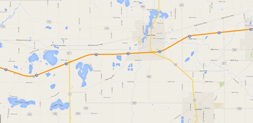

Bonjour! I've been taking classes Web in development since Spring 2014 working my way towards the Web Development Certificate. I obtained a Design Certificate at Seattle Central College in 2010. My employment background is in Sales & Marketing, Events and Advertising, SEO and content development.
In my life outside of class I work for several clients doing very different tasks; accounting, QuickBooks entry, office management, personal assistant, property management, eldercare, website development, design, management, SEO and content development.
I'm originally from St Claire Shores, MI on Lake St Claire, with access to Lake Huron to the north and Lake Erie to the south. My family moved across the state when I was young and we had a large cherry farm 30 miles west of Lake Michigan.

Since 1981, I have lived outside of Michigan, spending the last 17 in Seattle, Washington. I have an interest in sailing, history and the arts, as well as writing.
My goal in this class is to create and collaborate with others to learn how "team building" in the real world of code "works". My goal is to find a position working on a team building cool apps and/or helping an agency build websites.
My skills are stronger in back-end development than in front end, with an emphasis on using object oriented languages. I have some experience with fine arts, and the more artistic Creative Suite applications, but need to work on translating that into incorporating interactivity into a good front end. To that end, I will be spending some time tweaking this page to add some great functions I have seen on my classmates profile pages!!!!
I plan on attending every class, and watching our class recordings regularly after being in class.
This is my email: pbarke01@seattlecentral.edu